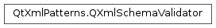

QXmlSchemaValidator¶
Note
This class was introduced in Qt 4.6.
Synopsis¶
Functions¶
- def
messageHandler() - def
namePool() - def
networkAccessManager() - def
schema() - def
setMessageHandler(handler) - def
setNetworkAccessManager(networkmanager) - def
setSchema(schema) - def
setUriResolver(resolver) - def
uriResolver() - def
validate(data[, documentUri=QUrl()]) - def
validate(source) - def
validate(source[, documentUri=QUrl()])
Detailed Description¶
The
PySide2.QtXmlPatterns.QXmlSchemaValidatorclass validates XML instance documents against a W3C XML Schema.The
PySide2.QtXmlPatterns.QXmlSchemaValidatorclass loads, parses an XML instance document and validates it against a W3C XML Schema that has been compiled withPySide2.QtXmlPatterns.QXmlSchema.The following example shows how to load a XML Schema from a local file, check whether it is a valid schema document and use it for validation of an XML instance document:
schemaUrl = QUrl("file:///home/user/schema.xsd") schema = QXmlSchema() schema.load(schemaUrl) if schema.isValid(): file = QFile("test.xml") file.open(QIODevice.ReadOnly) validator = QXmlSchemaValidator(schema) if validator.validate(file, QUrl.fromLocalFile(file.fileName())): print "instance document is valid" else: print "instance document is invalid" }
XML Schema Version¶
This class implements schema validation according to the XML Schema 1.0 specification.
-
class
PySide2.QtXmlPatterns.QXmlSchemaValidator¶ -
class
PySide2.QtXmlPatterns.QXmlSchemaValidator(schema) Parameters: schema – PySide2.QtXmlPatterns.QXmlSchemaConstructs a schema validator. The schema used for validation must be referenced in the XML instance document via the
xsi:schemaLocationorxsi:noNamespaceSchemaLocationattribute.Constructs a schema validator that will use
schemafor validation. If an emptyPySide2.QtXmlPatterns.QXmlSchemaschema is passed to the validator, the schema used for validation must be referenced in the XML instance document via thexsi:schemaLocationorxsi:noNamespaceSchemaLocationattribute.
-
PySide2.QtXmlPatterns.QXmlSchemaValidator.messageHandler()¶ Return type: PySide2.QtXmlPatterns.QAbstractMessageHandlerReturns the message handler that handles parsing and validation messages for this
PySide2.QtXmlPatterns.QXmlSchemaValidator.
-
PySide2.QtXmlPatterns.QXmlSchemaValidator.namePool()¶ Return type: PySide2.QtXmlPatterns.QXmlNamePoolReturns the name pool used by this
PySide2.QtXmlPatterns.QXmlSchemaValidatorfor constructingnames. There is no setter for the name pool, because mixing name pools causes errors due to name confusion.
-
PySide2.QtXmlPatterns.QXmlSchemaValidator.networkAccessManager()¶ Return type: PySide2.QtNetwork.QNetworkAccessManagerReturns the network manager, or 0 if it has not been set.
-
PySide2.QtXmlPatterns.QXmlSchemaValidator.schema()¶ Return type: QXmlSchema* Returns the schema that is used for validation.
-
PySide2.QtXmlPatterns.QXmlSchemaValidator.setMessageHandler(handler)¶ Parameters: handler – PySide2.QtXmlPatterns.QAbstractMessageHandlerChanges the
message handlerfor thisPySide2.QtXmlPatterns.QXmlSchemaValidatortohandler. The schema validator sends all parsing and validation messages to this message handler.PySide2.QtXmlPatterns.QXmlSchemaValidatordoes not take ownership ofhandler.Normally, the default message handler is sufficient. It writes compile and validation messages to stderr . The default message handler includes color codes if stderr can render colors.
When
PySide2.QtXmlPatterns.QXmlSchemaValidatorcallsQAbstractMessageHandler.message(), the arguments are as follows:message() argument Semantics QtMsgTypetypeOnly QtWarningMsgandQtFatalMsgare used. The former identifies a warning, while the latter identifies an error.const PySide2.QtCore.QString& descriptionAn XHTML document which is the actual message. It is translated into the current language. const PySide2.QtCore.QUrl&identifierIdentifies the error with a URI, where the fragment is the error code, and the rest of the URI is the error namespace. const PySide2.QtXmlPatterns.QSourceLocation& sourceLocationIdentifies where the error occurred.
-
PySide2.QtXmlPatterns.QXmlSchemaValidator.setNetworkAccessManager(networkmanager)¶ Parameters: networkmanager – PySide2.QtNetwork.QNetworkAccessManagerSets the network manager to
manager.PySide2.QtXmlPatterns.QXmlSchemaValidatordoes not take ownership ofmanager.
-
PySide2.QtXmlPatterns.QXmlSchemaValidator.setSchema(schema)¶ Parameters: schema – PySide2.QtXmlPatterns.QXmlSchemaSets the
schemathat shall be used for further validation. If the schema is empty, the schema used for validation must be referenced in the XML instance document via thexsi:schemaLocationorxsi:noNamespaceSchemaLocationattribute.
-
PySide2.QtXmlPatterns.QXmlSchemaValidator.setUriResolver(resolver)¶ Parameters: resolver – PySide2.QtXmlPatterns.QAbstractUriResolverSets the URI resolver to
resolver.PySide2.QtXmlPatterns.QXmlSchemaValidatordoes not take ownership ofresolver.
-
PySide2.QtXmlPatterns.QXmlSchemaValidator.uriResolver()¶ Return type: PySide2.QtXmlPatterns.QAbstractUriResolverReturns the schema’s URI resolver. If no URI resolver has been set, Qt XML Patterns will use the URIs in instance documents as they are.
The URI resolver provides a level of abstraction, or polymorphic URIs . A resolver can rewrite logical URIs to physical ones, or it can translate obsolete or invalid URIs to valid ones.
When Qt XML Patterns calls
QAbstractUriResolver.resolve()the absolute URI is the URI mandated by the schema specification, and the relative URI is the URI specified by the user.
-
PySide2.QtXmlPatterns.QXmlSchemaValidator.validate(source[, documentUri=QUrl()])¶ Parameters: - source –
PySide2.QtCore.QIODevice - documentUri –
PySide2.QtCore.QUrl
Return type: PySide2.QtCore.boolValidates the XML instance document read from
sourcewith the givendocumentUriagainst the schema.Returns
trueif the XML instance document is valid according to the schema,falseotherwise.Example:
schema = getSchema() file = QFile("test.xml") file.open(QIODevice.ReadOnly) validator = QXmlSchemaValidator(schema) if validator.validate(file, QUrl.fromLocalFile(file.fileName())): print "instance document is valid" else: print "instance document is invalid"
- source –
-
PySide2.QtXmlPatterns.QXmlSchemaValidator.validate(data[, documentUri=QUrl()]) Parameters: - data –
PySide2.QtCore.QByteArray - documentUri –
PySide2.QtCore.QUrl
Return type: PySide2.QtCore.boolValidates the XML instance document read from
datawith the givendocumentUriagainst the schema.Returns
trueif the XML instance document is valid according to the schema,falseotherwise.Example:
schema = getSchema() data = QByteArray("<?xml version=\"1.0\" encoding=\"UTF-8\"?><test></test>") buffer = QBuffer(data) buffer.open(QIODevice.ReadOnly) QXmlSchemaValidator validator(schema) if validator.validate(buffer): print "instance document is valid" else: print "instance document is invalid"
- data –
-
PySide2.QtXmlPatterns.QXmlSchemaValidator.validate(source) Parameters: source – PySide2.QtCore.QUrlReturn type: PySide2.QtCore.boolValidates the XML instance document read from
sourceagainst the schema.Returns
trueif the XML instance document is valid according to the schema,falseotherwise.Example:
schema = getSchema() url = QUrl("http://www.schema-example.org/test.xml") validator = QXmlSchemaValidator(schema) if validator.validate(url): print "instance document is valid" else: print "instance document is invalid"
© 2018 The Qt Company Ltd. Documentation contributions included herein are the copyrights of their respective owners. The documentation provided herein is licensed under the terms of the GNU Free Documentation License version 1.3 as published by the Free Software Foundation. Qt and respective logos are trademarks of The Qt Company Ltd. in Finland and/or other countries worldwide. All other trademarks are property of their respective owners.